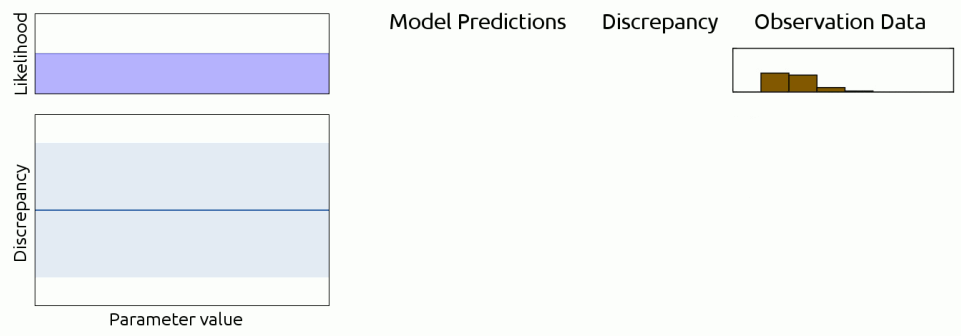
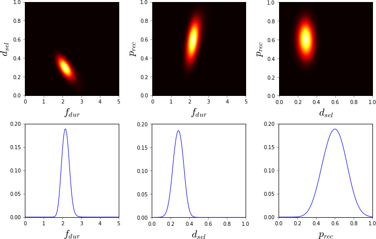
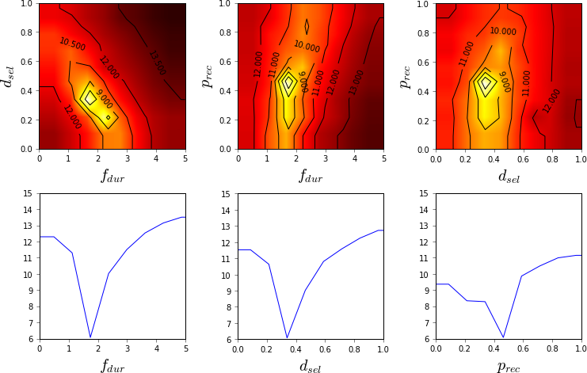

Introduction
Human-computer interaction is experiencing a large change as the services and applications we use are becoming intelligent. User experience is increasingly dependent on complex mathematical models that adapt to the feedback and instructions provided by the user. For example, the search engines we use adjust their recommendations based on our search history, and social media platforms and streaming services select the displayed content based on a model of our interests. It is likely that in the future the vast majority of our services will be personalized.
How to make an intelligent system understandable and easy to use, even though it uses complex algorithms to drive its behavior? The usability of intelligent systems has various challenges. This is because, for example, it may be difficult for the user to predict the effects of her actions. The dissertation presents methods to improve the usability of search engines that perform online modelling of the user's interests. The methods visualize the predicted effects of user actions and change the system dynamic behavior to be easier to control, thus improving its usability. The methods also highlight possible inconsistencies in the user feedback, making it easier for the user to spot inconsistencies in her feedback. The presented methods could be used to improve the usability of various existing systems for personalized search and recommendation.
How to learn a realistic model of user behavior based on observations from the real world? Modern user models are still very simple compared to the complexity of human decision-making. This is due to challenges in inferring the parameters of more realistic user models. Realistic user models would enable more accurate predictions of the user's interests and allow more suitable personalisation for each user. The dissertation proposes a simulation-based inference method, which allows inference even for complex user models that are not amenable for traditional gradient-based inference methods. The method is efficient and able to infer the uncertainty of the parameter values as well. It is shown to work well with modern reinforcement learning based user models, as well as models commonly used in cognitive science. Using the proposed method it could be possible to use more realistic user models in multiple situations which require personalization and inference of user interests.
Search AI Usability
Toy Search Engine
(Dragging of sliders and the accompanying animation only works with a mouse)
Model Visualization
Intelligent systems rely on a user model for personalizing the user experience. However, only few systems actually allow the user to see or interact with the model. The toy search engine above is intended to demonstrate how an interactive user model could be implemented. This approach to user modelling is called interactive user modelling.
Interactive user modelling has various benefits. First, it allows the user to take small controlled steps in the search space. The visualization provides keyword suggestions, making it easier to spot relevant search keywords. As the user is able to inspect the user model, this increases the user's trust in the system. Interactive user modelling is also likely to improve the accuracy of the mental model the user has of the system, as the user has more relevant information available.
Interactive user modelling is also related to the interpretability of models in general. As the user model may be very complex, it is important to design the visualization in such a way that the user is able to comprehend what the model state actually is at any given moment.
Interaction Predictability
Interaction is predictable if the user is able to predict in advance what effects her actions will have on the system. Predictable systems are easier to use, as it is easier for the user to choose the most suitable action for each situation. For example, a car that would sometimes turn right when the drive steered left is not predictable.
However, just because the user can see the model does not mean that the user can predict how her actions will change the model. This means that a distinction needs to be made regarding the interpretability of the model state and the interpretability of model dynamics. A visualized model has an interpretable state if the user can aswer questions such as "what are the features of the current model that have the largest effect on the predictions the model makes?" In comparison, the visualized model has interpretable dynamics if the user can answer to questions such as "how would the most important features of the model change if I would give this or that feedback?"
The dissertation proposes an easy way to make any interpretable model also dynamically interpretable: use the existing visualization to display the predicted future model state while the user is deciding the value of the next feedback. This improves the interpretability of the model dynamics, and allows the user to construct a more adequate mental model of the system behavior as well. The method can also be used with any user model that can be visualized.
This behavior is demonstrated in the toy search engine, where the predicted model state and search results are visualized as the user drags a keyword with mouse.
Model Controllability
A system is controllable if the user is able to make the system behave in the way the user wants. Systems that are more controllable are easier to use, as the user has more influence over the system behavior. For example, a car whose wheels would only turn half as much as normal would be less controllable and require more user effort for performing certain manoveurs.
In interactive user modelling, one problem with the controllability of the user model is that the more feedback the user gives, the smaller the relative effect of each individual piece of feedback. In general, there is no guarantee that new feedback given by the user will have an effect of certain size to the model or the predictions, unless one consideres all the previous feedback as well.
The dissertation proposes a method for guaranteeing model controllability to some degree in all situations. Instead of treating user feedback simply as "one more data point", it is treated as a specific requirement for the next model state. An optimization algorithm is then used for choosing what data points should be added to the model training dataset to achieve the end state desired by the user. The method can be used with any underlying user model for improving its controllability.
This behavior is demonstrated in the toy search engine, where feedback weights are optimized so that the model conforms to the latest feedback. The weights are displayed as multipliers after the feedback name. The feature is naturally most active when there is a large amount of existing feedback.
Feedback Visualization
A system is transparent if the user can predict the system behavior from a visualization of the system state. For example, if a car dashboard would not have a fuel gauge, the driver could not predict when pressing the gas pedal would take her forward. Transparency contributes to the predictability of interaction and the ability of the user to control the system state.
As discussed above, the behavior of a system that models its users may depend on a long history of feedback given by the user. If the user is not aware of all the data that contributes to the behavior of the user model, this makes the system less transparent. Furthermore, part of this data might be wrong, due to errors in user feedback, or deprecated, due to changes in the interests of the user. It would be best if such observations could be identified and removed or corrected.
The dissertation proposes a method to improve the transparency of the feedback history and make possible errors in the history salient to use user. This is done by visualizing the feedback history together with the estimated accuracy of each feedback. By making suspicious feedback salient, it is easier for the user to find and correct possible errors, analogously to how spell-checkers work in text editing software.
This is demonstrated in the toy search engine by the yellow backgrounds of feedback that can't be adequately explained by the model. The feature is naturally most active when there exists contradicting feeback.
Future work
The methods work with interpretable user models, where model parameters make sense for the user. However, there are model families, such as neural networks, where the model parameters are not intelligible to the user. How could models like these be visualized and made predictable as well?
Relevant Publications
Antti Kangasrääsiö, Dorota Głowacka, and Samuel Kaski. Improving Controllability and Predictability of Interactive Recommendation Interfaces for Exploratory Search. In Proceedings of the 20th International Conference on Intelligent User Interfaces, IUI'15, pp. 247-251. ACM, 2015. [access publication] [PDF] [slides] [video] [reviews] [publication info] [conference web page]
Antti Kangasrääsiö, Yi Chen, Dorota Glowacka, and Samuel Kaski. Interactive Modeling of Concept Drift and Errors in Relevance Feedback. In Proceedings of the 24th Conference on User Modeling, Adaptation and Personalization, UMAP'16, pp. 185-193. ACM, 2016. [access publication] [PDF] [poster] [preprint] [reviews] [publication info] [conference web page]
Toy Search Engine FAQ
What is the search data?
Test data (scikit-learn) for the 20Newsgroups dataset for the comp.* groups.
The search engine doesn't react to my query?
The search engine has a very limited index, and can only search for words that
exist in the index. Try some generic IT-related words.
What is the search user model?
Ridge regression for estimating keyword weights based on feedback and their
occurence in the search documents. Vector space model for estimating document
relevance based on keyword relevance.
Why is the search engine sometimes slow?
It's a toy model with no optimizations intended for quick demonstration of
certain usability concepts. All computations are performed in your browser.
Is the source code available?
In GitHub.
Cognitive Model Inference
Cognitive Models
Cognitive models are a subset of user models distinguished by the explicit assumptions they make of the cognitive processes and capabilities of the user. The user is viewed as an intelligent and (mostly) rational decision-maker, with capabilities such as memory, vision, and ability to learn. These models, developed earlier mostly in the field of cognitive science, are the most credible computational representation we currently have of human cognition.
There are multiple motivating reasons for bringing these models out from the laboratories and incorporating them into real systems. First of all, they could offer superior predictions of user interests, goals and cognitive capabilities. These predictions could then allow the user interface and user experience to be personalized to each user in much higher detail than previously. For example, search results could be visualized differently for users who are fast at visual search, compared to those who are slower. Or users who are conducting exploratory search could be shown a different search interface than users who are performing directed known-item search. The possibilities are endless, and limited only by our cabability to learn such complex models from realistic observation data.
Challenges with Inference
Before cognitive models can be applied in real systems, efficient automated inference methods need to be developed. Cognitive models often have multiple parameter values that affect the predictions made with the models. Inference means finding suitable values for these parameters, such that the predictions made with the model agree with human behavior in the real world. Inference is often done by collecting a large amount of observation data from user experiments and then optimizing the parameter values to predict well on this data.
The main challenge with optimizing the parameter values of cognitive models is that the mathematical relation between the parameter values and the model predictions -- the likelihood function -- is often very complex and computationally expensive, or even impossible, to evaluate. Because of this, many common optimization approaches, such as gradient descent, can not be applied to cognitive model parameter inference.
Approximate Bayesian Computation and Bayesian Optimization
While the likelihood function is too expensive to be optimized directly, we can optimize a surrogate function that is closely related to it: the model prediction error. This is intuitive, as parameter values with high likelihood should lead to more accurate predictions, and vice versa. Technically, the Approximate Bayesian computation (ABC) framework provides us with the theory for approximating the likelihood function using the prediction error function.
However, generating predictions from the model with various parameter value combinations may still be computationally expensive, and the predictions often contain stochastic noise as well. However, we can address these concerns by using Bayesian optimization (BO), which is a method designed precisely for optimizing stochastic and computationally expensive functions.
By combining ABC and BO, we get an inference framework that is able to estimate the likelihood of cognitive model parameter values, which is applicable to practically all modern cognitive models. A notable benefit of the approach is that it also provides estimates of the parameter uncertainty across the parameter space, and not just a point-estimate of the most likely parameter value combination. This is a significant improvement to the previous state-of-the-art, which comprised of manual tuning, grid search and various point-estimation methods that did not provide any estimates of parameter uncertainty.

The above animation illustrates how the inference process works. Parameter values to be evaluated are selected by the BO acquisition function (arrow). Predictions are generated from the model using these parameters. The discrepancy between the predictions and the observations (prediction error) is evaluated. The Gaussian process (GP) regression model for predicting discrepancy across the parameter space is updated based on the new observation, and the process continues. Parameter likelihood is estimated from the GP regression model.

The plots above show the inference results for three parameters of a cognitive model for visual search. The plotted value is the posterior probability (the likelihood multiplied by prior probability). The posterior is well identified, and the results are easy to interpret. Furthermore, the as the results are in the form of a probability distribution, they can be used as a prior in a follow-up study.

In comparison, the plots above show the inference results from grid search using similar amount of computational resources. The shape of the function near its optimum is not equally well defined due to sample locations being spread out equally all over the parameter space. The results are not equally easy to interpret, and prior knowledge of credible parameter values can not be easily incorporated in the inference process. For example, the fixation duration parameter on the bottom left has inferred value of 175 milliseconds, which is very low when compared to the known average duration of 250 ms.
Future work
The method is able to perform inference for tens of parameters at a time, but scalability to higher dimensions is still an open problem. Advances in high-dimensional global optimization will likely help in solving this issue.
Relevant Publications
Antti Kangasrääsiö, Samuel Kaski. Inverse Reinforcement Learning from Summary Data. Machine Learning, vol. 107, pp. 1517-1535, 2018. [access publication] [PDF] [preprint] -- presented in ECML PKDD 2018 journal track as plenary talk and poster [slides] [poster] [conference web page]
Antti Kangasrääsiö, Jussi P.P. Jokinen, Antti Oulasvirta, Andrew Howes, Samuel Kaski. Parameter Inference for Computational Cognitive Models with Approximate Bayesian Computation In review, 2018. [manuscript in dissertation]
Antti Kangasrääsiö, Kumaripaba Athukorala, Andrew Howes, Jukka Corander, Samuel Kaski, Antti Oulasvirta. Inferring Cognitive Models from Data using Approximate Bayesian Computation. In Proceedings of the 2017 CHI Conference on Human Factors in Computing Systems, CHI'17, pp. 1295-1306. ACM, 2017. [access publication] [slides] [preprint] [reviews] [publication info] [conference web page]
Jarno Lintusaari, Henri Vuollekoski, Antti Kangasrääsiö, Kusti Skytén, Marko Järvenpää, Michael Gutmann, Aki Vehtari, Jukka Corander, Samuel Kaski. ELFI: Engine for Likelihood Free Inference. Journal of Machine Learning Research, vol. 19, (16):1-7, 2018. [access publication] [preprint] [journal volume]
Relevant Software
Engine for Likelihood-Free Inference (ELFI) [documentation] [source]
Extensions / experiment repositories related to the above publications:
* ELFI experiment framework
[source]
* ELFI reinforcement learning extension
[source]
* ELFI cognitive model inference experiment
[source]
(NB: these are not actively maintained any more and may depend on an old version of the main ELFI library)
Author: Antti Kangasrääsiö
Contact
firstname.lastname@iki.fi
Links
Research home page
Google Scholar
LinkedIn
Currently working at Curious AI, Helsinki
Working on system identification and control, natural language understanding
and user interaction with intelligent systems.
Doctor of Science (Tech.), 2018 (hopefully)
Studied the usability of machine learning powered systems and simulator-based
inference of realistic user models. Also studied start-ups and entrepreneurship
in the EIT Digital doctoral school.
Member of the
Probabilistic Machine Learning
research group.
Master of Science (Tech.), 2013
Studied agent-based modelling of complex decentralized systems, such as
recyclables markets and smart grids. Also mobile robotics, control theory, and
computer systems in factory automation. Member of the
Automation IT research group.
Bachelor of Science (Tech.), 2011
Studied maths, control theory, programming languages and factory automation.
I did my thesis on online system identification and control (adaptive control).
Thanks
Samuel Kaski for the idea of making this page
Tapio Heiskanen for the awesome mobile menu
Eero Laukkanen for technical suggestions to improve mobile-friendlyness
Hotloo Xiranood for additional CSS style suggestions
Paul Blomstedt for spotting multiple typos
Elli <3